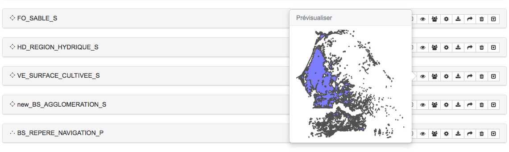

Sources de données¶
Table des matières
Une source de données est constituée d’une ou plusieurs informations à références spatiales, contenues par l’un des Espaces de stockage disponibles. MapMint supporte plusieurs types de sources de données décrites dans cette section.
Les pictogrammes utilisés pour illustrer le type d’une source de données sont présentés dans la table suivante.
| Icône | Type |
| Source de données vectorielles de type Point | |
| Source de données vectorielles de type Ligne | |
| Source de données vectorielles de type Polygone | |
| Source de données matricielles |
Données vectorielles¶
Formats supportés¶
MapMint supporte les formats de données vectorielles listés ci-dessous.
| Format | Code | Fichiers nécessaires |
| Comma Separated Value | CSV | csv |
| ESRI Shapefile | SHP | shp,dbf,shx,prj |
| GPX | GPX | gpx |
| Mapinfo | MIF | mif |
| KML | KML | kml |
| PostgreSQL/PostGIS | PostGIS | connexion PostGIS |
| Web Feature Service | WFS | connexion WFS |
Consulter la table¶
Pour consulter la table d’une source de données, veuillez cliquer sur l’icône “flèche” à droite de la Barre d’outils des sources de données. Cela entraine l’éffichage de la table de données. Un exemple de cette table est présenté ci-après.
Une fois la table affichée, et si celle-ci contient un nombre d’entités suffisant, il est possible de naviguer dans les différentes pages de la table à l’aide des bouttons “Précédent” et “Suivant” de navigation affichée en bas de la table ou en cliquant directement sur le numéro de la page souhaitée.
Dans le cas où le contenu de la table correspondante à votre source de données ne serait pas affiché correctement, consulter la section data-datasources-encoding. vous devrez alors définir l’encodage de votre source données, en utilisant le champs texte prévu à cet effet puis en cliquant sur le bouton “Définir”.
Note
La liste déroulante en haut à gauche de la table vous permet d’afficher 10, 15, 20, 25 ou 30 entités par page
Note
Le clic sur un titre d’une colone trie les valeurs par ordre croissant/décroissant ou par ordre alphabétique.
Définir l’encodage des caractères de la table¶
MapMint utilise l’encodage UTF-8 par défaut pour afficher les tables des sources de données. Il est toutefois fréquent que des données encodées dans un autre système soient chargées dans le module de gestion des données. Dans ce cas, il est possible d’assigner un système d’encodage différent dans le champs texte prévu à cet effet, à droite de la barre de navigation.
Veuillez y entrer le code de l’encodage désiré, puis cliquez sur l’icône “Rafraichir” de la barre d’outil. Cela entrâine le rechargement de la table et son affichage dans l’encodage souhaité.
Des exemples d’encodage de caractère sont listés ci-dessous à titre informatif:
| Code | Description |
| utf-8 | Ensemble des caractères internationaux d’unicode compatible avec la norme ASCII (anglais) |
| iso-8859-1 | Alphabet latin numéro 1 contenant 191 caractères de l’alphabet latin |
| iscii | Alphasyllabaires utilisés en Inde, au Sri Lanka et au Bangladesh |
| viscii | Alphabet latin moderne du vietnamien |
| shift-jis | Syllabaires et écriture sinographique traditionnelle des langues japonaises |
Note
Obtenez plus d’informatons sur le codage des caractères sur Wikipédia
Données matricielles¶
Formats supportés¶
apMint supporte les formats de données matricielles listés ci-dessous.
| Format | Code | Fichiers nécessaires |
| Arc/Info ASCII Grid | AAIGrid | asc |
| GeoTiff | GTiff | tif |
| JPEG | JPEG | jpg |
Consulter l’histogramme¶
Pour consulter l’histogramme d’une source de données, veuillez cliquer sur l’icône “flèche” à droite de la Barre d’outils des sources de données. Cela entraîne le depliement de l’histogramme, comme illustré ci-après.
L’histogramme de la source de données vous permet de consulter la distribution de sa/ses bande(s) dans la matrice de pixel.
Note
Il est possible de zoomer dans l’histogramme en maintenant votre curseur et en desssinant un rectangle
Barre d’outils des sources de données¶


{kind=link}
{kind=link}
{kind=link}
{kind=link}
Droits d’accès¶
Une source de données est accessible à tous les groupes d’utilisateurs par défaut. Pour modifier les permissions l’accès à une couche, veuillez cliquer sur l’icone correspondant dans la Barre d’outils des sources de données. Celà entraîne l’ouverture de la fenêtre des droits d’accès, illustrée ci-dessous:

| Valeur | Définition |
| r | Le groupe d’utilisateur à accès à la couche en lecture |
| w | Le groupe d’utilisateur à accès à la couche en écriture |
| x | Le groupe d’utilisateur à accès ... |
Ajoutez un ou plusieur groupes avec le boutton “Ajouter”, cela entraine l’ajout de listes déroulantes dans la fenêtre. Ajustez les valeurs r, w et x puis cliquer sur le bouton “Valider”. La fenêtre se ferme et l’enregistrement des modifications est stipulé en haut de votre écran dans un bandeau de couleur verte.
Convertir une source de données¶
La conversion de données est traitée dans la partie : Géotraitements.
Téléchargement¶
Pour télécharger une source de données sur votre ordinateur, il suffit de cliquer sur l’icône correspondante dans la Barre d’outils des sources de données. Cela engendre le téléchargement direct de la donnée, archivée dans un fichier .zip
Prévisualisation¶
Pour prévisualiser une source de données, veuillez cliquer sur l’icône correspondante dans la Barre d’outils des sources de données, cela affiche une bulle de prévisualisation comme illustré ci-dessous.
| Source de données vecteur | Source de données raster |
|  |
{kind=link}
{kind=link}
Note
Les sources de données vecteur sont prévisualisées avec un style par défaut (remplissage violet et bordure gris foncé)
Avertissement
Les sources de données de type WMS externes ne disposent pas de la fonctionnalité de prévisualisation
Suppression¶
Pour supprimer une source de données, veuillez cliquer sur l’icône correspondante dans la Barre d’outils des sources de données. Cela ouvre la fenêtre de suppression illustrée ci-après.
{kind=link}
Cliquez sur le bouton “Supprimer” pour supprimer la donnée. La fenêtre se ferme et la suppression de la source de données est stipulé en haut de votre écran dans un bandeau de couleur verte.
Avertissement
L’utilisation de cette fonctionnalité supprime la source de données de l’espace de stockage et supprime le jeux de données physiquement sur le serveur. Cette action est permanente et irréversible.
Ouverture¶
Pour ouvrir une source de données dans le Module de création de cartes, veuillez cliquer sur l’icône correspondante dans la Barre d’outils des sources de données. Cela entraine l’ouverture de la source de données dans le Module de création de cartes. La source de données est ajouté à la racine de l’arbre de couches, dans un projet Untitled_0 et représentée avec le style par défaut.
Note
Une fois la source de données chargée, il est conseillé d’enregistrer le projet Untitled_0 sous un nom adéquat